Aim
I am FPGA novice and want to try classical FPGA design tutorials. I bought perfect modern FPGA board ZYBO (ZYnq BOard) based on Xilinx Z-7010 from Digilent but latest tools from Xilinx VIVADO 2015.2 more focused on AP SoC programming while I want to just pure FPGA design without any linuxes bootloaders etc. So I wrote this tutorial to help people like me :)
In this example we make simple scheme: 2 signals IN and 4 OUT.
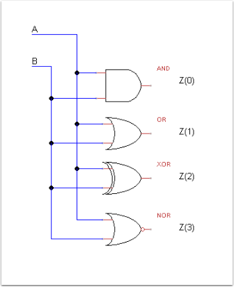
Preconditions: Adding Zybo Board to Vivado
Vivado 2015.2 under Windows 7 64 bit was used with 16 GB of RAM.
Before using Zybo with Vivado you should add Zybo Definitions File to Vivado.
1. Good source for Board Definition files is Zynqbook website.Download The_Zynq_Book_Tutorial_Sources_Aug15.zip
2. Copy zybo folder with content from Archive path \sources\zybo\setup\board_part into D:\Xilinx\Vivado\2015.2\data\boards\board_files (if D:\Xilinx\Vivado\2015.2 is my PC you probably have C:\Xilinx etc...)
3. In board_files you should see other boards so now our Zybo known by Vivado.
4. Download ZYBO_Master.xdc from Digilent website unpack constraints file it on local hard disk.
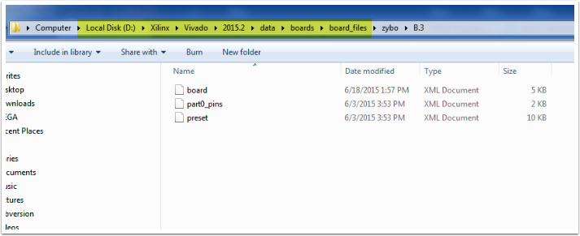
Phase 1. Preparation.
I have latest Vivado Design Edition from Xilinx which comes with Digilent Zybo board.
Launch your Vivado.
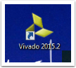
Create new project
New Project
Click Next

Set project name.
Set project name to gates2,
Keep rest settings unchanged unless you know what you doing.
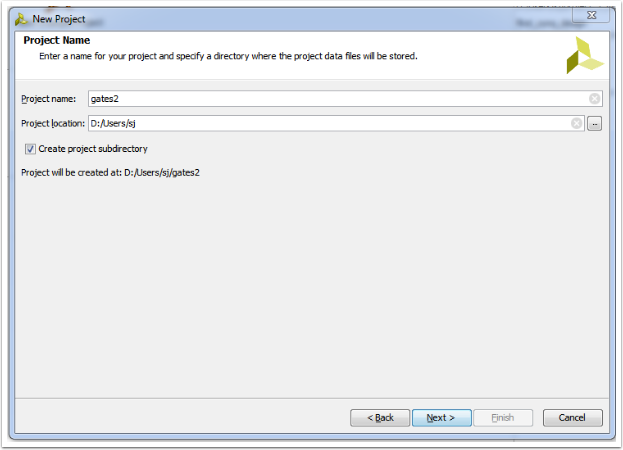
Project Type
Keep default RTL(Register Transfer Level) project, Press Next

Add sources
In this tutorial we decided to use VHDL language so make sure it set correctly. Simulator language you can keep unchanged.
Click on "+" - Select - Create File.
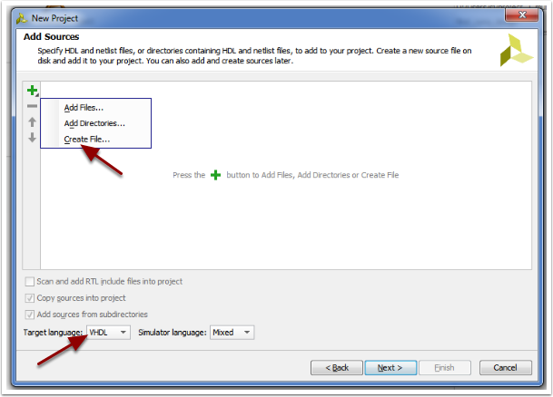
Create Source File
Set Filename to gates2. Keep the rest unchaged. Press OK. Press Next.
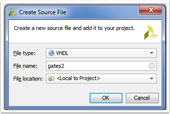
Add Existing IP
Click Next.

Add Constraints
Click "+", Add Files.

Add Constraint file we downloaded at Precondition step(You have to restart Vivado to see ZYBO board).
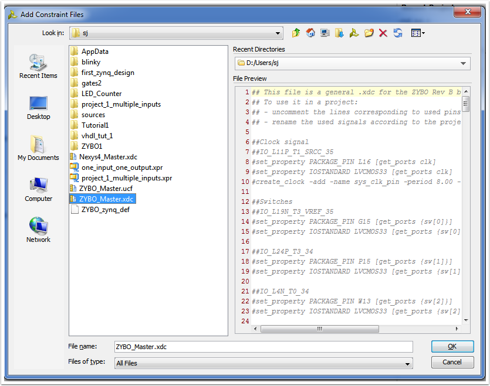
Make sure: Copy constraints files into project - Checked.
Click - Next
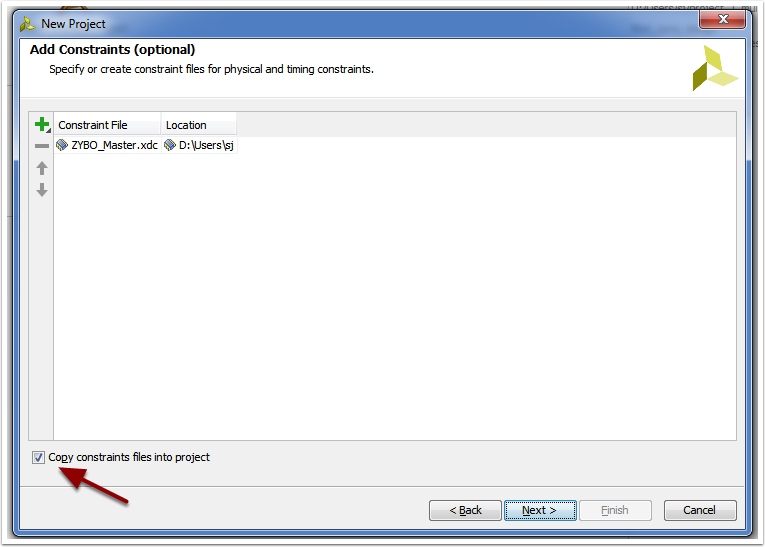
Default Part
Click on boards and select Zybo. If you still dont have it follow steps in Preconditions: Adding Zybo board to Vivado.
If you dont see ZYBO goto Preconditions Step.
Next.
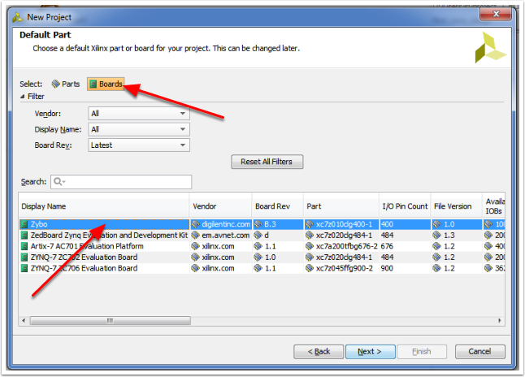
New Project Summary
Finish

Phase 2. Editing Project
Project files generated and ready for your design.
We will implement 2 input gates and 4 output basic gates and, or, xor and nor.
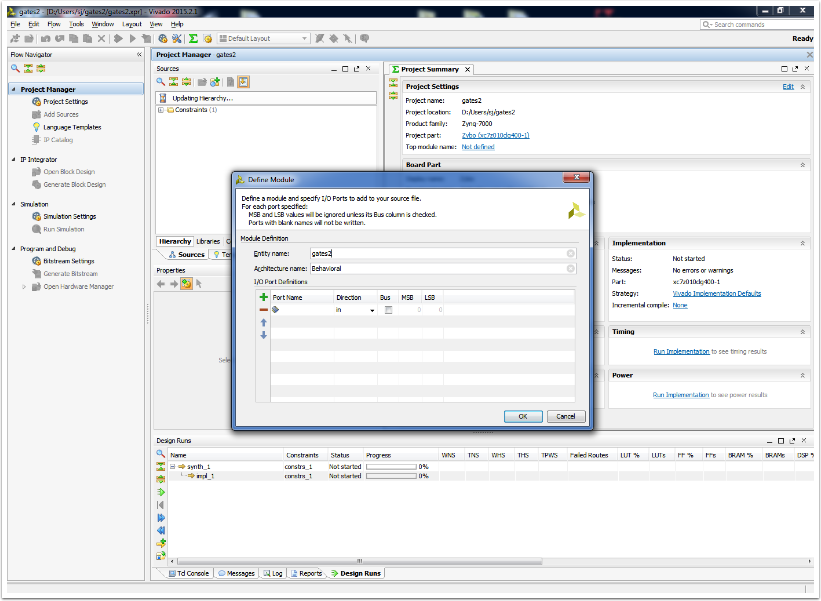
Define I/O ports as below
OK
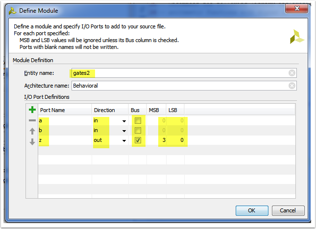
Select VHDL Design
Click on Source file in Project Manager>Sources>Design Sources - Source code on Righthand side should appear.
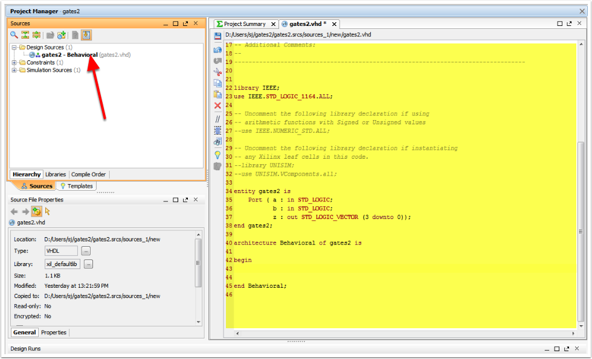
Changes to source code.
Modify VHDL file - add lines as highlighted below.
z(0) <= a and b;
z(1) <= a or b;
z(2) <= a xor b;
z(3) <= a nor b;
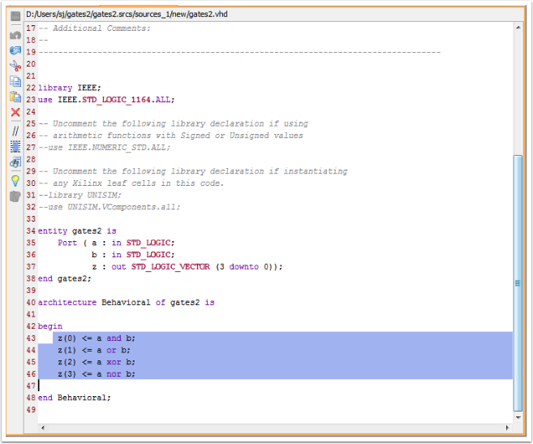
Create top file
Rightclick on Design Sources and select Add Sources.
1. Add or create design souces.
2. "+" > Create File
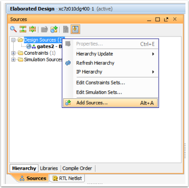
File Type :VHDL,
File name: top_gates2
OK
Finish
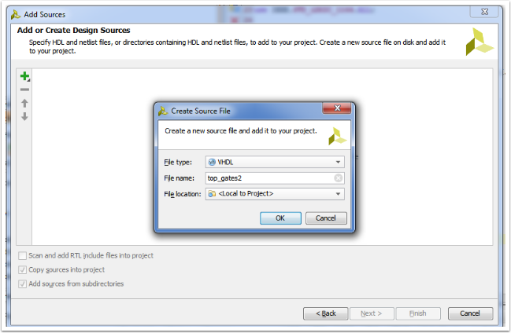
Define Module
Add sw and led as on image below.
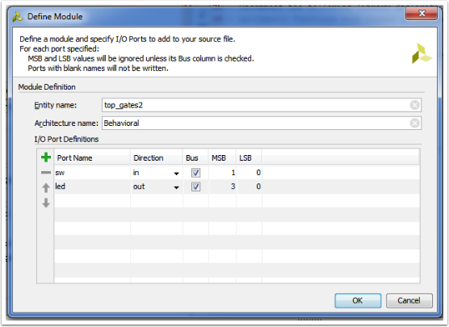
Replace default source code.
library IEEE;
use IEEE.STD_LOGIC_1164.ALL;
entity top_gates2 is
Port (
sw : in STD_LOGIC_VECTOR (1 downto 0);
led : out STD_LOGIC_VECTOR (3 downto 0)
);
end top_gates2;
architecture top_gates2 of top_gates2 is
component gates2 is
Port (
a : in STD_LOGIC;
b : in STD_LOGIC;
z : out STD_LOGIC_VECTOR (3 downto 0)
);
end component;
begin
cl : gates2
port map (
a => sw(0),
b => sw(1),
z(0) => led(0),
z(1) => led(1),
z(2) => led(2),
z(3) => led(3)
);
end top_gates2;
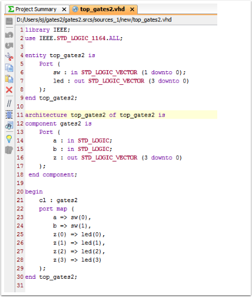
Top Design
We have single top design interface file which use our gates2 design as component.
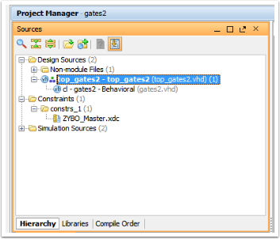
top design
Make sure our top file became parent of gates2 file. Otherwise set it manually with Set as Top.
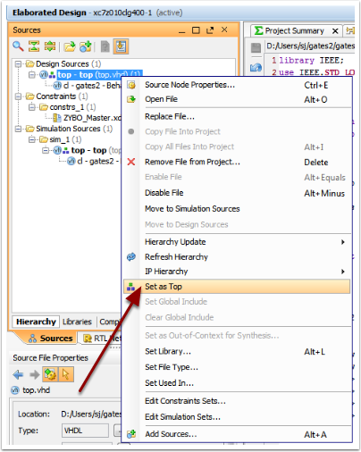
Amend Constraints file
Select xdc file from Sources>Constraints
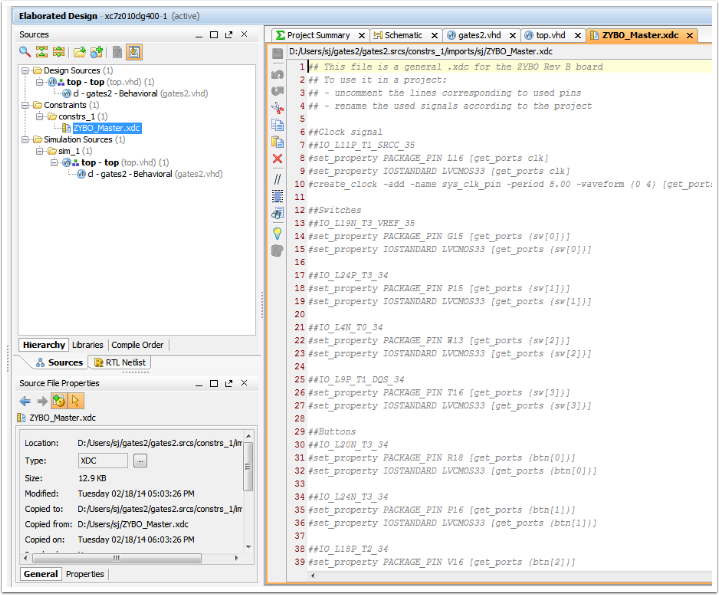
Changes in xdc file
Uncomment lines of I/O ports we need to use.
Save file.
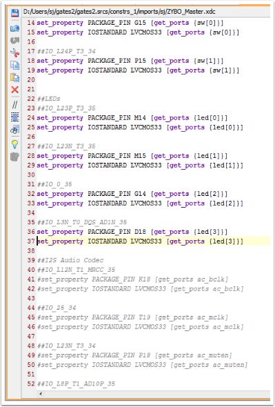
Phase 3 - Synthesis and uploading to device.
At Synthesis phase we convert our circuit from register transfer level (RTL) into a design implementation in terms of logic gates.
In Flow Navigator on Lefthand side.:
Next steps can be Simulation>Run Simulation or RTL Analysis>Schematic but we skip them in this tutorial and come directly to Synthesis>Run Synthesis.
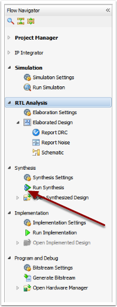
Synthesis complention
Leave default Run Implementation
OK
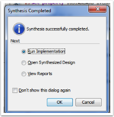
Generate Bitstream
Select Generate Bitstream
OK

Final
Pay attention to jumpers.
JP7 - It should set to USB.
JP5 can be JTAG or QSPI
Connect ZYBO to PC with Micro-USB cable.
Photo taken from http://marsee101.blog19.fc2.com/blog-entry-2745.html
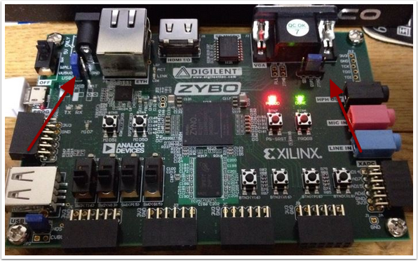
Program ZYBO
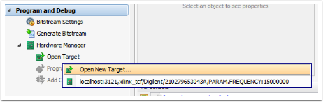
Next
Next
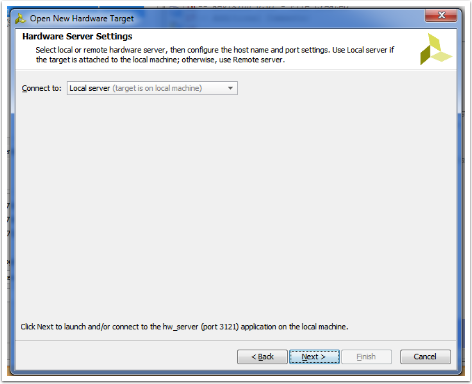
Make sure you have similar setting like on picture below.
Select xc7z010_1
Next
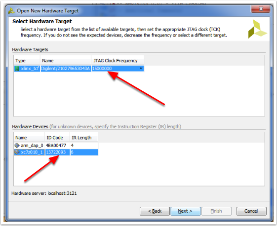
Finish
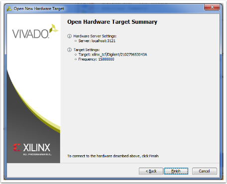
Program device > xc7z010_1
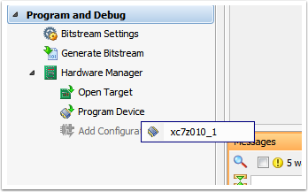
Program

As confirmation of successfull upload Greed Led will set
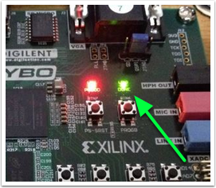

Reference
1. Digital Design Using Digilent FPGA Boards VHDL/ Active-HDL edition. Richard E. Haskell, Darrin M. Hanna
2. Learning By Example Using VHDL. Advanced Digital Design With a NEXYS 2 FPGA Board. Richard E. Haskell, Darrin M. Hanna
3. The ZYNQ BOOK - Make sure you download not only book archive but also tutorials book with sources.
4. HDL Chip Design- A Practical Guide for Designing, Synthesizing and Simulating ASICs and FPGAs Using VHDL or Verilog. By Douglas J. Smith
Files
Feedback
boris@borisivanov.com
Comments (9)
Hello,
Thank you for this VHDL example. It has been very useful.
Andrew
You welcome!
I get a failed Synthesis...
[Synth 8-2321] mismatch on label ; expected behavioral ["C:/~~~/Xilinx/Projects/lab/gates2/gates2.srcs/sources_1/new/top_gates2.vhd":59]
However I dont see what I have done wrong..
);
end component;
begin
cl : gates2
port map (
a => sw(0),
b => sw(1),
z(0) => led(0),
z(1) => led(1),
z(2) => led(2),
z(3) => led(3)
);
end top_gates2;
Apologies...I think I was too quick to ask. I found I had not changed the name for the architecture. Thanks the tutorial is wonderful
Thank you!
Good work! Very useful. Do you have any more examples like ZYBO interfacing with external units such as 7 segment display, motors, cameras, etc.
Keep up the good works!
Thanks for feedback!
Here article about basic PMOD: http://borisivanov.com/index.php/2015/12/28/using-digilents-pmod8ld-with-zybo-fpga-board-2/
Soon I will publish mini project with 7 Segments PMOD and probably VGA.
Great work! Thank you! I will use Zybo in my thesis and your guide is actually the best for beginning!
You welcome! Zybo is great.